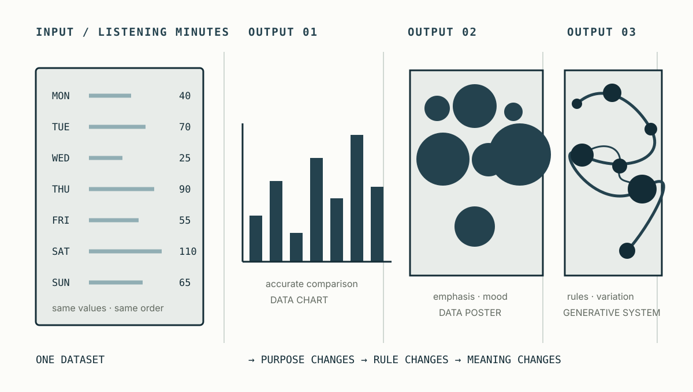
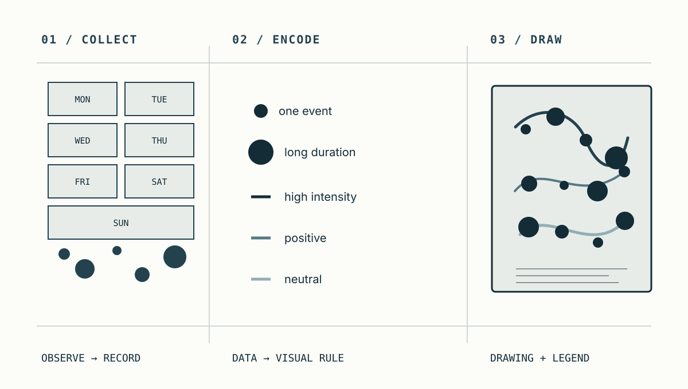
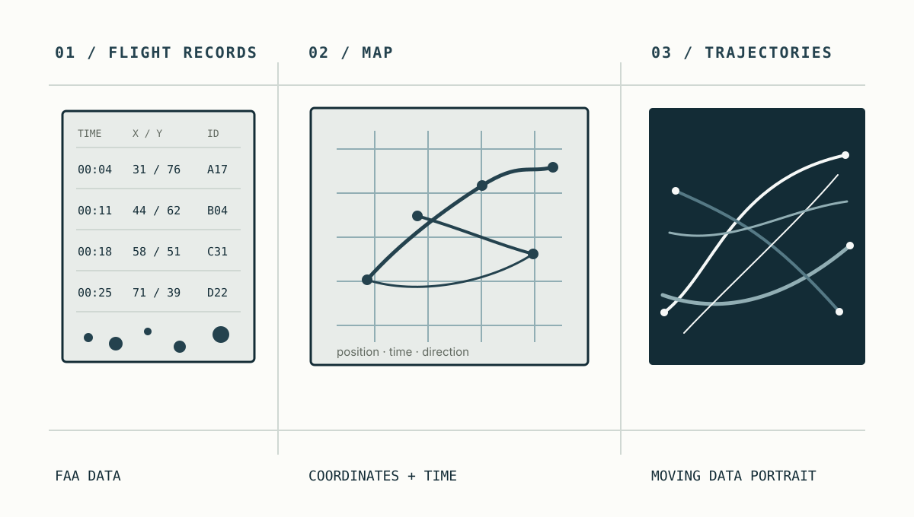
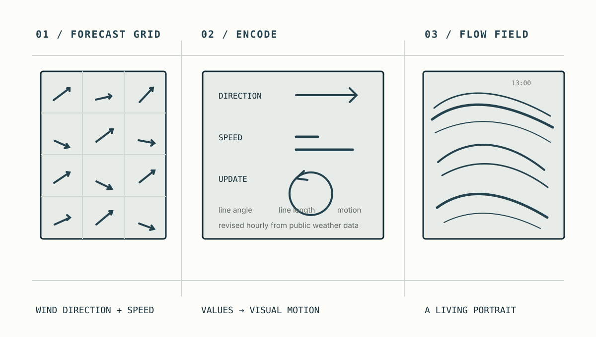
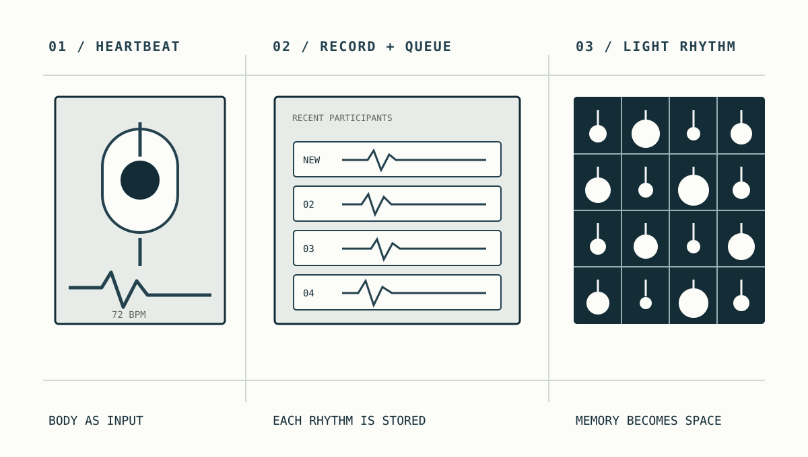

1주차 오리엔테이션
오늘의 학습 목표
- 이 과목에서 말하는 콘텐츠 프로그래밍을 자신의 말로 설명할 수 있습니다.
- 생성예술과 데이터 아트 사례에서 입력, 규칙, 출력을 찾아낼 수 있습니다.
- 자신의 전공과 일상에서 프로젝트로 발전시킬 데이터 후보를 세 가지 이상 찾을 수 있습니다.
- Google Colab에 접속해 새 노트북을 만들고 첫 코드를 실행할 수 있습니다.
-
0-10 min
사전 진단
프로그래밍 경험과 수강 목표, 관심 매체를 개별 기록합니다.
-
10-40 min
강의 개요 및 운영 안내
강의 목표와 프로젝트를 확인하고 콘텐츠 프로그래밍의 구조를 이해합니다.
-
40-70 min
사례 분석
다섯 공식 사례 중 세 작품을 선정해 입력·규칙·출력의 관점에서 분석합니다.
-
70-82 min
개인 관심 분야 조사
일상과 전공에서 프로젝트로 발전시킬 수 있는 개인 주제 후보를 정리합니다.
-
82-88 min
환경 점검
Google Colab에 접속해 새 노트북을 만들고 첫 코드를 실행합니다.
-
88-90 min
수업 정리
오늘 이해한 개념과 다음 수업 전에 해결할 질문을 기록합니다.
시간 조절 방법
표준 운영은 90분입니다. Process와 Dear Data를 기본 사례로 다루고, 세 확장 사례 중 학생 전공과 가까운 작품 하나를 선택해 비교합니다. 60분으로 압축할 때에는 사전 진단을 수업 전 설문으로 전환하고 기본 사례를 하나만 분석합니다.
0-10분 · 사전 진단 및 수강 목표 확인
출발점 확인
첫 수업의 목적은 학생을 평가하는 것이 아니라 출발점을 확인하는 데 있습니다. 아래 응답은 이후 예시의 난이도와 실습 속도를 조절하고, 학생이 자신의 학습 변화를 확인하는 기준으로 사용합니다.
수강 전 진단
- 프로그래밍 경험을 0-3단계로 표시합니다: 0 처음 접함 / 1 예제를 실행해 봄 / 2 예제를 수정해 봄 / 3 작은 결과물을 혼자 만든 경험이 있음.
- 사용해 본 제작 도구를 적습니다. 예: Photoshop, Illustrator, After Effects, Blender, Unity, Excel, Processing, p5.js.
- 이번 학기에 코드로 다뤄보고 싶은 매체를 두 개 고릅니다: 이미지 / 데이터 / 텍스트 / 소리 / 움직임 / 웹.
- “수업이 끝났을 때 나는 ______을 만들 수 있으면 좋겠다”를 한 문장으로 완성합니다.
- 프로그래밍 수업에서 가장 걱정되는 점을 한 가지 적습니다.
교수자 진행 · 3분
응답을 회수하거나 온라인 설문 결과를 확인한 뒤, 경험의 차이는 성취도의 차이가 아니라 출발점의 차이라는 점을 안내합니다. 반복 실행과 수정 과정을 수업의 공통 학습 방식으로 제시합니다.
10-40분 · 강의 개요 및 핵심 개념
도입: 일상 속 데이터
수업에 참여하기 전까지의 하루를 떠올려봅니다. 알람을 끈 횟수, 이동 거리, 들은 음악, 보낸 메시지, 감정의 변화처럼 일상에는 다양한 데이터가 존재합니다. 이러한 기록은 콘텐츠 제작의 기초 자료가 될 수 있습니다.
개별 기록 · 2분
오늘 아침부터 현재까지 생성되거나 관찰된 데이터 세 가지를 기록합니다. 이 단계에서는 정확한 수치보다 기록할 수 있는 대상의 발견에 집중합니다.
콘텐츠 프로그래밍의 정의
콘텐츠 프로그래밍은 코드를 사용해 이미지, 텍스트, 수치, 소리 같은 재료를 변환하고 새로운 표현이나 경험으로 만드는 일입니다. 이 수업에서 코드는 정답을 맞히는 시험 과목이 아니라, 아이디어를 반복해서 시험하고 수정할 수 있게 하는 창작 도구입니다.
숫자, 문장, 사진, 색, 소리, 개인의 기록
반복, 조건, 정렬, 무작위성, 함수, 매핑
생성 이미지, 포스터, 시각화, 텍스트와 소리 작품
예를 들어 “최근 일주일의 기분”을 입력으로 정하고, 기분이 좋을수록 원을 크게 그리고 피곤할수록 색을 어둡게 만드는 규칙을 세우면, 일주일의 상태를 보여주는 이미지가 출력됩니다. 같은 데이터라도 규칙이 달라지면 전혀 다른 콘텐츠가 됩니다.

같은 데이터, 서로 다른 콘텐츠
데이터가 결과의 형태를 자동으로 결정하지는 않습니다. 제작자는 무엇을 전달할지 먼저 정하고, 그 목적에 맞게 데이터와 시각 요소의 관계를 설계합니다. 같은 일주일의 음악 청취 시간도 아래처럼 서로 다른 결과가 될 수 있습니다.

| 결과 유형 | 주요 목적 | 제작자가 결정하는 것 |
|---|---|---|
| 데이터 시각화 | 값과 관계를 정확하게 비교 | 축, 단위, 범례, 그래프 유형 |
| 데이터 포스터 | 정보를 특정 관점과 서사로 전달 | 강조할 값, 위계, 색과 구성 |
| 생성 시스템 | 규칙이 만드는 변화와 경험을 탐색 | 행동 규칙, 매개변수, 무작위성의 범위 |
강의 내용 및 주요 결과물
| 구간 | 배우는 개념 | 만드는 결과 |
|---|---|---|
| 1-3주 | Colab, 변수, 자료형, 좌표, 픽셀, RGB | 자기소개 노트북, 기하학적 이미지 |
| 4-7주 | 반복문, 리스트, 난수, 조건문, 함수, 이미지 변형 | 패턴, 생성 이미지, 이미지 생성기 |
| 8주 | 전반부 개념의 통합 | 중간 프로젝트: 생성 포스터 시리즈 |
| 9-13주 | 데이터 수집과 정리, 시각적 매핑, 텍스트와 소리 | 데이터 포스터, 텍스트·사운드 시각화 |
| 14-16주 | 기획, 프로토타이핑, 피드백, 발표 | 기말 프로젝트: 전공·관심 기반 콘텐츠 |
주차별 수업 진행 방식
| 교시 | 중심 활동 | 학생의 역할 |
|---|---|---|
| 1교시 | 새 개념과 표현 원리 이해 | 듣고, 질문하고, 핵심 개념을 메모합니다. |
| 2교시 | 사례 분석과 코드 구조 이해 | 결과와 코드를 비교하고 다음 출력을 예측합니다. |
| 3교시 | 단계별 제작과 개인 변형 | 직접 실행하고, 값을 바꾸고, 오류를 기록하며 완성합니다. |
이 수업에서 중요한 것
처음부터 코드를 외우거나 완벽하게 작성하는 것이 목표가 아닙니다. 실행하기 → 결과 관찰하기 → 한 가지 바꾸기 → 다시 실행하기를 반복하며 코드와 결과의 관계를 이해하는 것이 핵심입니다.
과제 및 프로젝트 구성
- 매주 실습: 수업 시간에 만든 Colab 노트북과 시각 결과물을 정리합니다.
- 중간 프로젝트: 규칙과 매개변수를 활용한 생성 이미지 또는 포스터 시리즈를 제작합니다.
- 기말 프로젝트: 자신의 전공이나 관심 분야를 데이터와 알고리즘으로 재해석한 콘텐츠를 제작하고 발표합니다.
- 과정 기록: 사용한 데이터, 핵심 규칙, 시행착오, 수정 이유를 노트북 안에 남깁니다.
평가 정보 확인
정확한 평가 비율, 출결 기준, 제출 기한은 해당 학기의 강의계획서와 LMS 공지를 최종 기준으로 확인합니다.
40-70분 · 공식 사례로 보는 생성예술과 데이터 아트
사례 분석 기준: 입력·규칙·출력
코드 기반 작품은 표면적인 인상뿐 아니라 작품을 구성하는 입력, 변환 규칙, 출력의 관계를 함께 살펴보아야 합니다. 아래 세 질문은 이후의 작품 사례 분석에서도 공통 기준으로 사용합니다.
- 입력: 작가는 무엇을 재료로 사용했는가?
- 규칙: 재료를 어떤 기준으로 선택하고 변환했는가?
- 출력: 그 규칙이 어떤 형태와 의미를 만들었는가?
생성예술·데이터 시각화·데이터 아트의 차이
세 영역은 서로 완전히 분리되기보다 목적과 강조점이 겹칩니다. 작품을 하나의 장르로 단정하기보다, 무엇을 중심에 두는지 비교하면 각 접근을 더 정확하게 이해할 수 있습니다.
| 영역 | 중심에 두는 것 | 주요 질문 | 수업에서 연결되는 방법 |
|---|---|---|---|
| 생성예술 | 규칙과 시스템 | 규칙이 어떤 변화와 형태를 만드는가? | 반복, 난수, 조건, 함수 |
| 데이터 시각화 | 값과 관계 | 정보를 정확하고 명료하게 읽을 수 있는가? | 데이터 정리, 그래프, 시각적 매핑 |
| 데이터 아트 | 데이터에 대한 해석과 경험 | 데이터를 통해 어떤 관점과 감각을 제안하는가? | 개인 데이터, 텍스트, 이미지, 소리 |
40-70분 표준 진행 기준
- 40-43분 분석 기준과 세 영역의 차이
- 43-50분 Process 설명과 개별 관찰
- 50-57분 Dear Data 설명과 개별 관찰
- 57-62분 확장 사례 세 작품 중 하나 선택
- 62-67분 개인 데이터의 입력·규칙·출력 설계
- 67-70분 사례 비교와 데이터 표현의 책임 정리
확장 사례의 나머지 두 작품과 접이식 개념 확인은 수업 후 개별 복습 자료로 사용합니다.
사례 1: Casey Reas, Process
Casey Reas의 Process 연작은 완성된 한 장의 그림보다 요소들의 관계와 행동을 설명하는 규칙에서 시작합니다. 프로그램은 그 규칙을 계속 실행하고, 화면에는 반복과 변화가 함께 나타납니다.

개별 관찰 · 3분
- 화면에서 반복되는 요소와 계속 달라지는 요소를 각각 하나씩 찾습니다.
- 작가가 직접 결정한 부분과 프로그램에 위임한 부분을 구분합니다.
- 규칙은 유지하면서 결과만 크게 바꾸려면 어떤 값을 조절할지 적습니다.
| 관찰 항목 | Process에서 읽어낼 수 있는 것 |
|---|---|
| 입력 | 점과 선 같은 요소, 시작 위치, 크기와 속도 |
| 규칙 | 요소 사이의 관계, 이동, 충돌, 반복과 변형 |
| 출력 | 규칙은 같지만 계속 달라지는 이미지와 움직임 |
| 작가의 선택 | 무엇을 규칙으로 만들고 어느 범위까지 우연에 맡길지 결정 |
핵심 관점
생성예술에서 작가는 모든 픽셀을 직접 배치하는 대신 이미지의 생성 조건을 설계합니다. 코드는 제작 도구인 동시에 작품의 작동 규칙이 됩니다.
사례 2: Giorgia Lupi와 Stefanie Posavec, Dear Data
Dear Data는 두 정보 디자이너가 1년 동안 매주 일상의 한 주제를 기록하고, 그 데이터를 손으로 그린 엽서로 바꾸어 주고받은 프로젝트입니다. 작업은 아날로그이지만 “무엇을 기록할지 정하고, 기호와 색의 규칙을 만들고, 반복해서 시각화한다”는 점에서 프로그래밍적 사고를 선명하게 보여줍니다.

개별 관찰 · 3분
- 기록 하나가 선, 점, 색, 방향 중 무엇으로 대응되는지 한 가지 예를 찾습니다.
- 범례가 없다면 해석하기 어려운 정보를 한 가지 적습니다.
- 자신의 일주일을 기록한다면 어떤 주제를 선택할지 한 문장으로 씁니다.
| 관찰 항목 | Dear Data에서 읽어낼 수 있는 것 |
|---|---|
| 입력 | 시간, 이동, 감정, 대화, 소리처럼 일상에서 직접 수집한 기록 |
| 규칙 | 각 기록을 선, 점, 색, 방향, 밀도 같은 시각 기호에 대응 |
| 출력 | 데이터 그림과 그것을 해석할 수 있는 범례가 담긴 엽서 |
| 작가의 선택 | 무엇을 데이터로 볼지, 어떤 맥락을 드러내거나 감출지 결정 |
공식 사례 확장: 데이터가 매체를 바꾸는 방식
데이터 아트의 입력은 개인 기록에 한정되지 않습니다. 이동 경로처럼 사회 시스템이 남긴 기록, 매시간 갱신되는 자연 현상, 관람자의 신체 신호도 코드의 입력이 될 수 있습니다. 표준 수업에서는 아래 세 작품 중 하나만 선택하고, 나머지는 수업 후 개별 복습 자료로 사용합니다. 구조도는 원작 이미지를 복제한 것이 아니라 각 작품의 데이터 흐름을 수업용으로 정리한 자료이며, 실제 화면과 영상은 카드의 공식 페이지에서 확인합니다.

Aaron Koblin, Flight Patterns ↗
북미의 항공 교통 데이터를 파싱하고 Processing으로 배치하여 수많은 비행의 경로와 시간적 리듬을 하나의 움직이는 풍경으로 보여줍니다.
- 입력
- FAA 항공 운항 기록
- 규칙
- 위치와 시간을 화면의 좌표와 진행 순서에 대응
- 출력
- 북미 상공을 가로지르는 빛의 궤적

Viégas & Wattenberg, Wind Map ↗
미국 국립 디지털 예보 데이터베이스의 바람 예보를 매시간 가져와 방향과 속도를 흐르는 선으로 바꿉니다. 정보 지도인 동시에 계속 변화하는 자연의 초상이 됩니다.
- 입력
- 공개된 바람 방향·속도 예보
- 규칙
- 방향은 선의 각도, 속도는 길이와 움직임에 대응
- 출력
- 매시간 갱신되는 바람 지도

Rafael Lozano-Hemmer, Pulse Room ↗
센서가 관람자의 심박을 감지하면 가장 가까운 전구가 같은 리듬으로 점멸합니다. 새로운 기록은 전구 배열의 첫 위치에 저장되고, 이전 참여자의 리듬은 한 칸씩 이동합니다.
- 입력
- 관람자의 실시간 심박
- 규칙
- 박동 간격을 기록하고 최근 순서대로 배열
- 출력
- 여러 사람의 심박을 기억하는 빛의 공간
개별 확장 관찰 · 5분
- 세 작품 중 자신의 전공 또는 관심 분야와 가장 가까운 사례 하나를 선택합니다.
- 공식 페이지를 열어 개념도만으로 알 수 없었던 실제 매체의 특징을 하나 기록합니다.
- 작품이 보이지 않던 무엇을 보이거나 느낄 수 있게 만들었는지 적습니다.
- 같은 데이터를 다른 매체로 바꾼다면 이미지, 소리, 빛, 공간 중 무엇을 선택할지 정합니다.
| 작품 | 데이터의 범위 | 시간성 | 출력 매체 |
|---|---|---|---|
| Process | 작가가 정의한 요소와 행동 | 실행 중 지속적으로 변화 | 소프트웨어 이미지 |
| Dear Data | 두 제작자의 개인적인 일상 | 일주일을 기록하고 한 장으로 정리 | 손으로 그린 엽서 |
| Flight Patterns | 북미 항공 교통의 공공 기록 | 비행 경로와 이동 시간을 재생 | 데이터 애니메이션 |
| Wind Map | 미국 전역의 기상 예보 | 매시간 새로운 값으로 갱신 | 인터랙티브 지도 |
| Pulse Room | 전시 참여자의 신체 신호 | 새 심박이 들어오며 이전 기록이 이동 | 센서와 전구 설치 |
수업 후 개별 복습: 개념 확인
이 항목은 표준 30분 사례 분석 시간에 포함하지 않습니다. 질문에 먼저 답한 뒤 항목을 열어 핵심 내용을 확인합니다.
1. 생성예술에서 작가는 완성된 이미지 대신 무엇을 만드는가?
생성 조건과 규칙을 설계하고, 가능한 결과 가운데 무엇을 보여줄지 선택합니다. 작가의 역할이 사라지는 것이 아니라 픽셀의 직접 배치에서 시스템의 설계로 이동합니다.
2. Dear Data는 코드가 없는데 왜 프로그래밍적 사고의 사례인가?
무엇을 기록할지 정하고, 기록의 형식을 통일하며, 값을 시각 기호에 대응시키고, 같은 절차를 반복합니다. 이는 데이터 구조·매핑 규칙·반복 절차를 설계하는 과정과 닮아 있습니다.
3. 같은 데이터에 다른 규칙을 적용하면 의미도 달라질 수 있는가?
그렇습니다. 무엇을 크게 보이고 어떤 값을 묶거나 제외하는지에 따라 독자가 주목하는 관계가 달라집니다. 시각화의 규칙은 정보를 옮기기만 하는 것이 아니라 의미의 읽는 순서를 만듭니다.
사례 비교
| 질문 | Process | Dear Data |
|---|---|---|
| 무엇이 반복되는가? | 소프트웨어가 요소의 행동을 반복 | 사람이 매주 관찰과 기록을 반복 |
| 무엇이 변하는가? | 실행할 때마다 화면의 구성 | 주제와 일상에서 수집되는 값 |
| 핵심 매체는? | 코드와 실시간 이미지 | 개인 데이터와 손으로 그린 엽서 |
| 공통점은? | 재료를 선택하고 규칙을 설계해, 직접 그리기만으로는 만들기 어려운 표현을 만든다. | |
개별 분석: 입력·규칙·출력 설계
- 자신의 일상이나 전공에서 기록할 수 있는 데이터 한 가지를 선택합니다.
- 선택한 데이터를 원, 선, 색, 크기, 위치 중 두 가지 시각 요소에 연결합니다.
- “___ 값이 커지면 ___을 변화시킨다” 형식으로 변환 규칙을 두 개 작성합니다.
- 해당 규칙을 적용했을 때 만들어질 결과를 한 문장으로 설명합니다.
예: 들은 노래 한 곡을 원 하나로 그린다. 곡이 길수록 원이 커지고, 에너지가 높을수록 채도가 높아진다.
데이터 선택과 표현의 책임
데이터는 현실 전체가 아니라, 누군가가 목적에 따라 선택하고 기록한 현실의 일부입니다. 무엇을 세고 무엇을 제외했는지, 숫자가 어떤 맥락에서 만들어졌는지를 함께 보아야 합니다.
- 출처: 누가, 언제, 어떤 목적으로 수집했는가?
- 동의: 다른 사람의 정보가 포함된다면 사용할 권한이 있는가?
- 표현: 크기와 축, 색의 선택이 사실을 과장하거나 축소하지 않는가?
- 저작권: 이미지, 텍스트, 음악의 사용 조건과 출처를 확인했는가?
70-82분 · 개인 관심 분야 및 프로젝트 주제 탐색
개인 주제 후보 작성
프로젝트의 출발점은 대규모 공공 데이터에 한정되지 않습니다. 일상에서 반복적으로 관찰하거나 기록하는 대상, 전공에서 다루는 자료, 사회적으로 탐구하고 싶은 주제도 데이터로 발전시킬 수 있습니다.
일상·전공·사회적 관심에서 주제 찾기
| 출발점 | 질문 | 예시 |
|---|---|---|
| 나의 일상 | 내가 반복해서 보고, 듣고, 느끼는 것은? | 수면, 이동, 음악, 식사, 감정, 사진 |
| 나의 전공 | 전공에서 숫자·텍스트·이미지로 기록되는 것은? | 색채, 악보, 대사, 동작, 재료, 공간 |
| 나의 관심 | 더 자세히 관찰하거나 알리고 싶은 문제는? | 환경, 접근성, 지역, 소비, 문화, 관계 |
각 후보 옆에 어떻게 모을 수 있는지와 어떤 형태로 바꾸고 싶은지를 한 줄씩 덧붙입니다.
82-88분 · Google Colab 환경 점검
Google Colab에 접속해 Google 계정과 실행 환경이 정상적으로 작동하는지만 확인합니다. 본격적인 Colab 사용법과 시각화 실습은 2주차에 다룹니다.
- Google 계정으로 로그인하고 Colab을 엽니다.
- 새 노트를 만든 뒤 파일 이름을
week01_학번_이름.ipynb로 바꿉니다. - 첫 코드 셀에 아래 한 줄을 입력하고 실행 버튼 또는
Shift + Enter를 누릅니다.
print("Hello, contents programming!")완료 기준
문장이 출력되고 파일이 Google Drive에 저장된 것을 확인하면 점검을 완료합니다. 접속 문제가 있는 경우 별도로 기록하여 다음 수업 전에 해결합니다.
88-90분 · 수업 정리
개별 정리
수업을 마치기 전에 아래 문장을 짧게 완성합니다.
- 내가 이해한 콘텐츠 프로그래밍은 ________________이다.
- 내가 데이터로 다뤄보고 싶은 것은 ________________이다.
- 다음 수업 전에 해결해야 할 질문은 ________________이다.
다음 주 예고
2주차에는 Colab의 코드 셀과 텍스트 셀을 구분하고, 변수와 자료형을 사용해 자신을 소개하는 작은 노트북을 만듭니다. 숫자, 글자, 참·거짓이 프로그램 안에서 어떻게 다른 재료로 다뤄지는지 살펴봅니다.
참고 자료
- Google Colab 수업에서 사용할 Python 노트북 환경
- Google Colab FAQ 저장, 공유, 실행 환경과 사용 제한에 관한 공식 안내
- Casey Reas, Process 간단한 규칙이 지속적으로 변하는 이미지를 만드는 생성 시스템
- Dear Data, The Project 일상의 개인 데이터를 매주 손으로 시각화한 1년간의 엽서 프로젝트
- Aaron Koblin, Flight Patterns FAA 항공 운항 데이터를 Processing으로 시각화한 작가 공식 프로젝트 페이지
- Fernanda Viégas & Martin Wattenberg, Wind Map 공개 기상 데이터를 매시간 갱신하는 인터랙티브 소프트웨어의 MoMA 소장품 기록
- Rafael Lozano-Hemmer, Pulse Room 관람자의 심박을 전구의 점멸과 공간의 기억으로 변환하는 작가 공식 작품 페이지